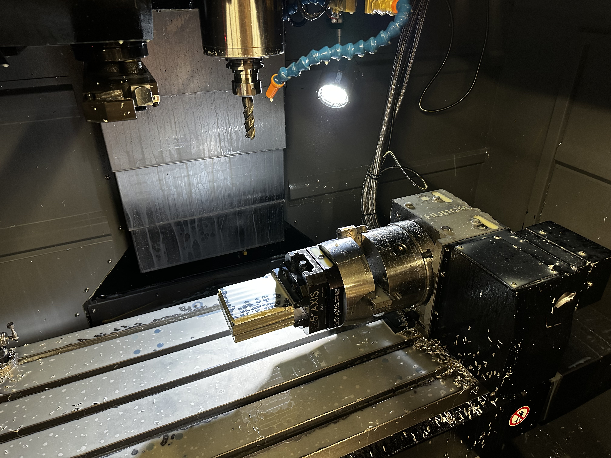
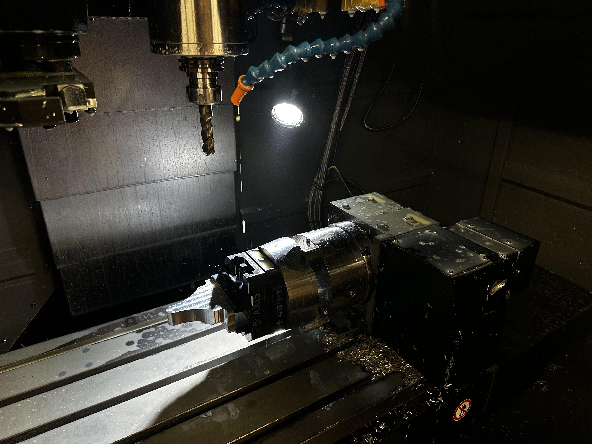
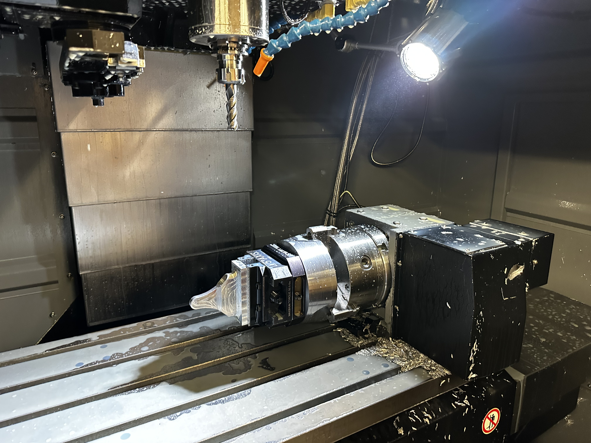
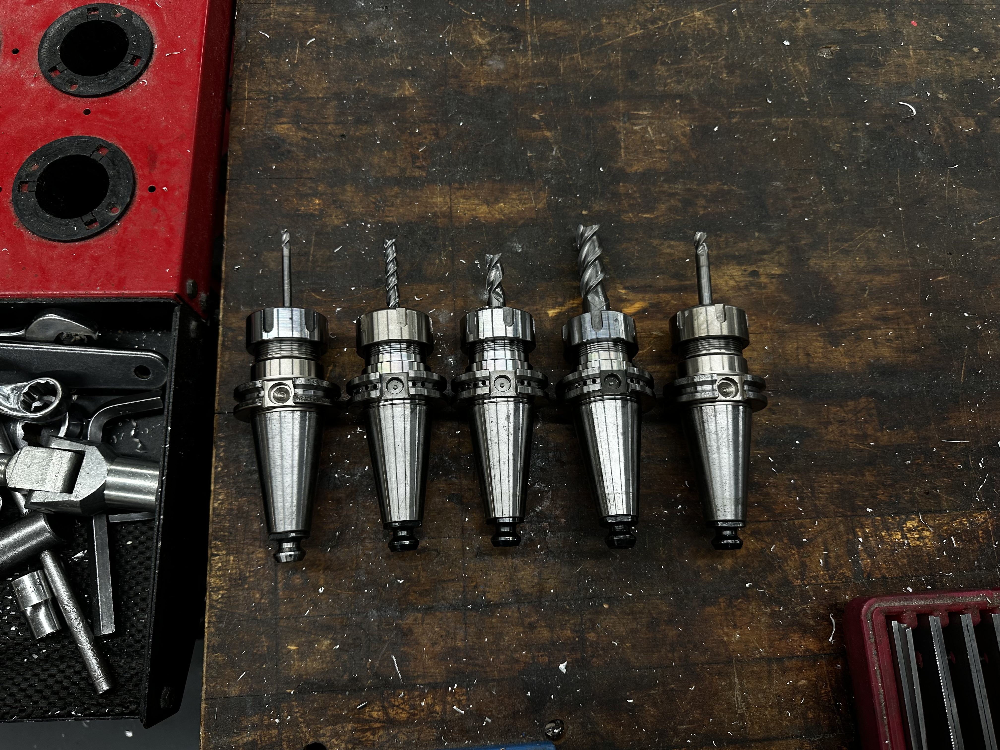
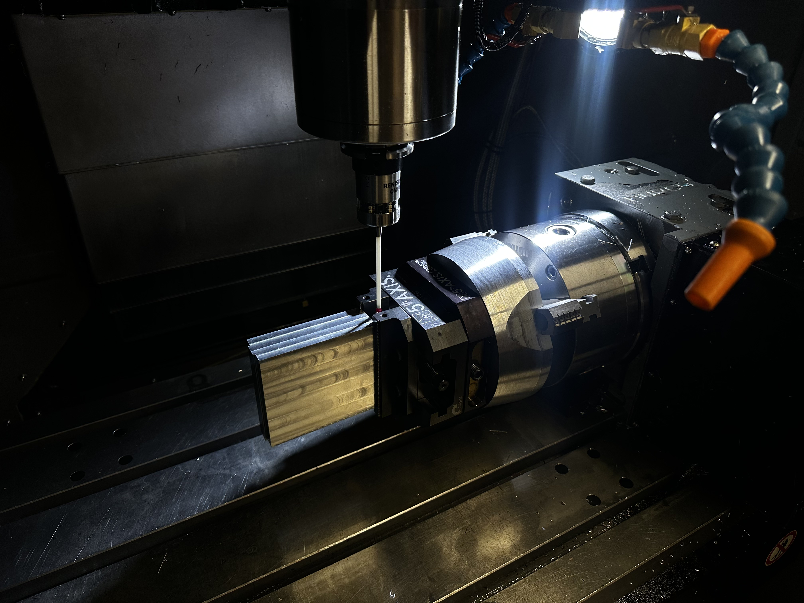

May 2025 - Present
2026 Internal Combustion and Electric Vehicle Pedal Box
A dedicated page for documenting roughing decisions, stock allowances, material removal strategy, and setup sequencing.





